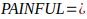
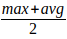
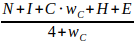
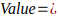
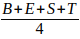

P - Pressure |
Problem intensity |
Measures the stress, frustration, or the disruption the problem causes. High-pressure problems demand attention. |
Does this problem actually hurt? |
A - Advantage |
Upside of solving |
Captures the value of solving the problem: saved time, more revenue, less stress, or new capabilities. |
What do they gain if this disappears? |
I - Immediacy |
How urgent it is |
Shows how bad they need the solution, in some markets, a medium but urgent problem may be better than a serious but non urgent problem |
Is solving the problem a priority? |
N - Necessity |
Unavoidability |
Determines if the user must fix it to avoid loss, risk, or failure or not |
Can they realistically avoid dealing with this? |
F - Frequency |
How often does it occur |
Measures how often the problem happens. Frequent problems compound pain and create urgency. |
How often does the pain show up? |
U- Unresolved consequence |
Fallout if ignored |
Captures the cost of not solving the problem: lost revenue, stalled projects, or compliance risk. |
What happens if they do nothing? |
L - Lapse |
Competition |
Are the existing solutions FULLY solving this problem? Are there any niches that need a tailored solution for this specific problem that other solutions fail to adress? |
Is there a room for improvment? |


P |
Pressure |
0–10; higher = more stress, disruption, or pain caused by the problem |
A |
Advantage |
0–10; higher = bigger benefit if the problem is solved |
I |
Immediacy |
0-10; higher = more urgency to find a solution |
N |
Necessity |
0–10; higher = problem must be solved to avoid loss or failure |
F |
Frequency |
0→Rare (once in life or decade) 3–4→Occasional (few times per year) 6–7→Frequent (monthly/weekly) 8–9→Very frequent (daily) 10→Constant/multiple times per day |
U |
Unresolved Consequence |
0–10; higher = bigger negative fallout if ignored |
L |
Lapse |
0–10; higher = the market or current solutions overlook this problem |
Examples of good and bad problems to solve:
Problem 1: A company worries that employees spend too much time decorating their office desks.
Assessment using PAINFUL:
Variable |
Score |
Reasoning |
Pressure (P) |
2 |
Low stress; it’s more cosmetic than disruptive. |
Advantage (A) |
2 |
Solving this yields minimal gains; productivity impact is minor. |
Immediacy (I) |
1 |
Not urgent; the company can ignore it without immediate harm. |
Necessity (N) |
1 |
Avoiding desk decoration is not critical; no major loss occurs if ignored. |
Frequency (F) |
3 |
Happens occasionally as employees redecorate or rearrange. |
Unresolved Consequence (U) |
2 |
Ignoring it has minor consequences—maybe a slight aesthetic mismatch. |
Lapse (L) |
2 |
It’s not a long-term entrenched issue; it’s situational. |
Max=3, Avg=1.85, PAINFUL=2.42 (Not Good to Solve)
Interpretation: Low PAINFUL score → Not worth prioritizing. Minimal impact, low urgency, and little gain from solving it.
Problem 2: too many subscriptions/subscription overload/subscription fatigue.
Assessment using PAINFUL:
Variable |
Score |
Reasoning / Notes |
Pressure (P) |
8 |
Many people feel they’re overspending, overloaded with subscription bills, or paying for unused subscriptions. The “pressure” is financial stress + mental overhead. Surveys: 57% believe they overpay, 40% say they have too many. |
Advantage (A) |
8 |
Solving subscription overload saves real money, reduces waste, relieves stress, and improves financial clarity. For many, that’s high value. |
Immediacy (I) |
7 |
Given rising cost-of-living, inflation, and rising subscription prices, many are motivated to act — but not everyone acts immediately: some delay or tolerate overload until pain becomes acute. |
Necessity (N) |
6 |
Not all subscription-overloaded users must fix it — people could ignore or deprioritize until a crisis. So it’s somewhat avoidable (i.e., you could just ignore or cancel a few). |
Frequency (F) |
8 |
The “pain event” (seeing a bill, forgetting a subscription, paying for an unused subscription) happens monthly — recurring — so high frequency. |
Unresolved Consequence (U) |
7 |
Ignoring the problem leads to wasted money over time, financial leaks, regret, and anxiety. Not life‑destroying, but the negative cumulative cost is real. |
Lapse (L) |
6 |
Some tools exist (subscription managers, budgeting apps), but user behavior and satisfaction suggest many of these don’t fully solve the pain (people still over‑subscribe, still mismanage). So there is room, but the market is not virgin. |
Max=8, Avg=7.14, PAINFUL=7.6 (good to solve)
Interpretation: Very high PAINFUL score → Excellent problem to solve. High urgency, high impact, frequent occurrence, and long-term pain make it a priority.
Note on Lapse:
A problem can appear “saturated”
because many SaaS products exist in the category (like invoicing),
but the saturation of the solutions does not mean the problem itself
is solved. Most broad SaaS tools address invoicing at a generic
level, but every niche has its own unique invoicing workflow, rules,
constraints, and pain points.
So while the category is crowded, the problem within a specific niche may still be highly underserved. When you target a specific vertical (e.g., therapists, contractors, freight brokers, clinics, agencies), the Lapse score often increases because their version of the problem has no tailored solution.
In short: The market for “invoicing software” is saturated, but the market for “invoicing for this specific niche with unique needs” is often wide open.
N—Need intensity: Who's in desperate need of your product?
I—Income: Do they have the money in their budget for it?
C—Customer Insight: Do you know the market? Do you have past knowledge or experience with the market?
H—Habitat: Are they easy to find? Where can you reach them? Are they gathering in FB groups or subreddits?
E—Expanding market: Is their number increasing or decreasing?

: The importance of having past knowledge in the market, if you feel like you can learn about the niche, this goes to 0. The weight is scored from 0-10, but normalized to 1 (divided by 10)
Score each part from 0-10
Unaware: they don’t know they have a problem yet (hard to sell because you’ll need to educate them)
Situation aware: they know they have some sort of problem, but they don't know which it is. They aren't unaware, yet they don't know the exact problem they are facing. (Educate first, fix second)
Problem aware: they know they have a problem and have a pain point, yet no solutions for it (easy to sell because you can be the first to present yourself)
Solution aware: they know of other solutions for the problem they have, but not yours yet (a bit tricky to sell because of the competition and the last position)
Product aware: they know about your product from ads or content, or you already pitched to them, yet they are not convinced. (Show proof of the results you promise; give a guarantee or a discount.)
Most aware: they want your product and are on the fence about buying, but just have that one objection holding them back (it’s easier to sell; find the objection and handle it)
You'd need this to discover how you should start marketing your product. Aim for people in the problem-aware state, as they are the easiest to sell. The solution aware is a little difficult as you'd have some competition to play against. Be prepared for comparisons. The unaware is more difficult, as you'd need to educate them about how bad their problem is before you pitch. The situationally aware is a little easier than the unaware but still needs education as they know they have a problem, but they don't know that it's your problem causing them the pain.
For example, SMBs having a pain of low conversions. They blame it on the landing page but it might have a bad lead quality. They think the landing is causing the pain but their problem is their lead quality.
Here are the 10 most important Whys that make people buy:
How does your solution help them:
Make money
Save money
Save time
Avoid effort
Escape physical or mental pain.
Get more comfort
Increase their popularity or social status
Achieve better cleanliness or hygiene to attain better health
Feel more loved
Gain praise
The more of these you tie your product, the better it gets. At best, especially in B2B sales, the first 5 are the most important ones. Can I use others? Ofc. Are there more? Ofc. Are these the only ones I need to become rich? Ofc.
U—Unique: Is your solution a new one? Or is it at least innovative?
S—Secured: Is your solution hard to copy? Does it have a mechanism that makes it difficult to steal and copy-paste? (this can be something like a past market experience, or reputation, or a community)
P—Pattern-Breaking: Does it change how people do things? Does it dramatically change an existing market? (Ex: electric vehicles, when they first started, changed the transportation industry; the phone changed communication, and the internet changed EVERYTHING.)
Does your product offer a unique, pattern-breaking solution to a PAINFUL problem while having a secured edge?
The product must solve a problem; that’s the baseline. But the way you solve it (the HOW) is what determines whether your product:
Gets adopted
Gets retained
Or becomes another abandoned app
A perfect example is productivity software; productivity is PAINFUL: if you’re not productive, nothing works. Yet 99% of productivity apps fail, and that's because the HOW is broken:
Kanban boards
To-do lists
Pomodoro timers
These tools confuse organization with productivity, if their users need decipline to use the app, they are fighting agaisnt the human nature from day one
Problem quality matters. Solution structure matters more.
M-Market Angle (Unexplored / Underserved Vector)
Are you targeting the same market from a different angle?
Today, every market already has solutions If you follow the exact same path as competitors, you’re signing up for a commodity war. (a solution doesn't always mean a SaaS; it might be a physical product they use to solve your problem)
Ask:
Unpopular Segment Angle: Segments no one is designing for, only around? (Who complains that tools “aren’t built for us”?)
Risk Removal Angle: What scares users about the existing solutions?
Cognitive Load Angle: Where are users mentally exhausted? (reduce thinking instead of adding features)
Workflow Position Angle: Where does pain spike the hardest in the workflow?
Behavior Angle: What are users actually doing when no one is watching? (our DMing tool solved the pain of automating DMs, but users also needed to track follow-ups, register notes about the conversations they had, etc.)
Outcome Ownership Angle: What result do users actually want, not what they say they want? (i want to automate DMs means they don't want to do it themselves)
Operator Knowledge Angle: What mistakes did you already make that users shouldn’t?
Trust & Legitimacy Angle: Why are users afraid to trust existing tools?
Learning Curve Angle: Who is failing silently with current tools? (Make beginners succeed fast)
Distribution Angle: Where can this live so users don’t need to “open” it? (productivity tools fail because you have to remember they exist)
Opinionated Constraint Angle; What could you intentionally refuse to support? (deliberately stupidly simple, no extra features)
How to Use This (Important)
Pick 2–3 that reinforce each other
O-Operator Advantage (Skin in the Game)
Do you (or your team) have earned insight others can’t fake quickly?
Sources of operator advantage:
Years doing the thing manually
Prior failures
Lived edge cases
Intuition that isn’t written anywhere
This creates:
Better defaults
Better UX decisions
Better playbooks
Faster iteration
This is a non-transferable advantage.
Most SaaS founders don’t have this. That’s why their products feel soulless
Example, when i was prospecting for our first paid users, i had this question multiple times (why should i choose you and not X?) Faster, cheaper, and better may not work and are not an answer, and you'll lose trust if you live by the price. My answer was this:
"Because we know, and we experimented with Reddit cold DMing, and 99% of those didn't. Most of them do not even consider the safety limits; most of them actually have no hands-on experience with cold DMing. That's why you didn't reply to them, and you replied to me haha" Click
Having insights or experience your competitors cannot achieve unless they put in the exact effort and years you spent is an advantage; knowledge is an advantage, and work experience is an advantage, so use those as your first playing cards.
A-Adoption Ease (Simplicity + First Win)
This is not optional. Two non-negotiable aspects EVERY SaaS should have in their onboarding and UX:
Does it feel easy immediately?
How fast is the first real win?
If the first win is fast:
Excitement rises
Trust forms
Exploration increases
This is where most productivity apps die:
Too many options
Too much setup
Too much thinking
In the DMing SaaS, our first win was the first few high-intent leads responding, not DMed. that created an issue for us because we couldn't control when the leads would reply to them.
T-Traction Gravity (Retention & Skin in the Game)
Leaving feels like losing progress
Question: What grows because the user keeps using it?
Good gravity:
History (leaving means they leave their entire history, notes, and hard-earned stats)
Data (leaving means they leave their hard-organized data)
Learning (leaving means they'll leave the materials and teachings)
Automation (leaving means they'll be back to manual labor)
Reputation (leaving means they'll lose their hard-earned reputation)
Personalization (leaving means they'll lose a valuable personalization they made in your tool)
B—Benefits: The results they will see (increase) (the more Why's that make people buy the higher)
E—Evidence: What evidence can you bring to show that your results are true? How much do they believe they'll see your results? Add a risk reversal guarantee if you don't have reviews yet (increase)
S—Speed: How long should they wait to see the results? (Highly decrease)
T—Trade-off: what efforts do they have to make, and what will they have to sacrifice before and after getting your product? (Highly decrease)
Rank each point from 0 to 10, and use this equation


Here's a quick value prop template:
X is a platform that helps [your niche] (action verb: get, fix, train, store, etc) [benefit] without even [effort & sacrifice]
Example of a value prop: "a SaaS review queue that helps developers get feedback for their software"
Value Prop: D4DFeedback is a platform that helps indie devs get early testers and genuine feedback non-devs can never give, feedback about “the concept, UI, UX, copy, security, bugs, errors, etc,” and helps them rate their software for social proof, improvement, and validation without even looking for the testers or sending a single message.
Gain: The outcome your customers see after using your product. (Also referred to as Benefits in previous frameworks.)
Pain: What they have to sacrifice, do, or lose just to get those gains. (Also referred to as Trade-off in previous frameworks)
Put each in a score of 1-10 and calculate
GP=Gain/Pain
The higher the better. Aim for 10, Meaning, your gain is 10X better than the pain associated with using your product.
A 1 is breakeven. Lower the risk. Lower? Hmmm
R — Requirements: What does your solution require to succeed? Technology, regulations, partnerships, data sources, user behavior, logistics… If any requirement fails or stalls, the entire solution is at risk.
I — Influences: What environmental, economic, political, or social factors could impact adoption negatively?
S — Sensitivity: How sensitive is the solution to public opinion, controversy, regulation, or competitive retaliation? Could it trigger backlash or resistance?
K — Kairos: Kairos = the perfect moment. Is the market ready now? Are users aware of the importance of fixing the problem? Are enabling technologies mature?
Note: You can have the BEST product ever solving the most PAINFUL problem in the most USP way, but if launched at the wrong time, it may fail, if it was influenced by policies and social factors like Dr. Dre and Metallica were not happy with Napster that made access to their music possible FOR free, and gained over 80M active users, only to be shut down by the DMCA for copyright policies. So make sure to check your RISK before you go to the market.
Final note: These are all theoretical, just to save you the hurdle of making something that is IMPOSSIBLE to sell. With these in your hand, you can filter all the noise and get the HIGHEST probability of success products. Focus your efforts on the potential winners. Not half products.
However, you can have the BEST product idea that solves the most PAINFUL problem in the most UNIQUE, SECURED, and PATTERN-BREAKING way with 0 effort and maximum gain, but still not succeed. Your execution is what makes a product successful. Bcs even if YOU know your product is good and solves a real problem, you can't explain its value to people. Then you'll lose.
if you want to find testers and get feedback for your tools without an audience posting, commenting, DMing or even looking for the testers. Checkout FeedbackQueue. It's Free.
Have fun
Ren
CMO at FeedbackQueue